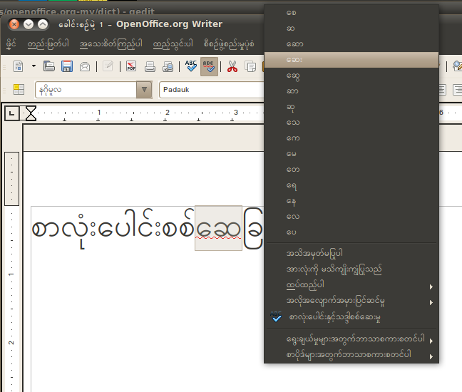
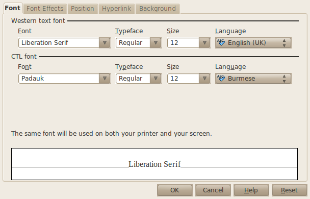

The ThanLwinSoft Myanmar Extension for OpenOffice adds Burmese spellchecking support to OpenOffice. It also allows word based line breaking of Myanmar, even when there are no spaces between the words. It uses a word list based on Dr Judson's Myanmar-English dictionary, with some additions for modern Myanmar.
OpenOffice အတွက်သံလွင်ဆော့ဖ်မြန်မာတိုးချဲ့ချက်သည် OpenOffice ကို ထောက်ပံ့နိုင်ရန် မြန်မာစာလုံးပေါင်းစစ်ဆေးခြင်းကို ထည့်သွင်းသည်။ မြန်မာစာလုံးများကြားတွင် နေရာလွတ်များမရိုက်လျှင်တောင်မှ ၎င်းသည် စာလုံးများကို ဖြတ်တောက်ပေးသည်။ ၎င်းသည် ယုဒသန်အဘိဓာန်မှ စကားလုံးစာရင်းကို အဓိကအသုံးပြုထားပြီး လက်ရှိသုံးတချို့မြန်မာစကားလုံးများကို ထည့်သွင်းထားပါသည်။

Burmese / မြန်မာ must be selected as your language in the Character dialog for the Myanmar spellchecking and line breaking to work correctly.
မြန်မာစာလုံးပေါင်းစစ်ရန်နှင့် မှန်ကန်သောအဖြတ်အတောက်အတွက် ဘာသာစကား အက္ခရာများဒိုင်ယာလော့တွင် မြန်မာ ကို ရွေးချယ်ရမည်။

Please select and download the appropriate .oxt file for your system. The extension can be installed, after downloading, using the Tools/Extension Manager menu in OpenOffice.
Synaptic Package Manager သင့်စနစ်အတွက် သင့်တော်သော .oxt ဖိုင်ကို ရွေးချယ်ပြီး ဒေါင်းလုတ်ဆွဲတင်ပါ။ Openoffice မှ ကိရိယာ/မန်နေဂျာတိုးချဲ့ချက် မီနျူးကို အသုံးပြု၍ ဒေါင်းလုတ်ဆွဲတင်ြပီးနောက် တိုးချဲ့ချက်ကို ထည့်သွင်းနိုင်သည်။
Packages for Ubuntu are available by adding the ThanLwinSoft package repository to your apt sources list or by using the Synaptic Package Manager.
deb http://www.thanlwinsoft.org/ubuntu lucid main
You may also want to install the thanlwinsoft-keyring package so that the packages can be verified.
သင်၏ apt ရင်းမြစ်စာရင်းကို သံလွင်ဆော့ဖ် စာဖိုင်ထုတ်လှောင်ရုံတွင် ပေါင်းထည့်ခြင်း (သို့) Synaptic Package Manager ကို အသုံးပြုခြင်းဖြင့် Ubuntu အတွက် စာဖိုင်ထုတ်များကို ရယူနိုင်သည်။
deb http://www.thanlwinsoft.org/ubuntu lucid main
စာဖိုင်ထုတ်များ မှန်ကန်ကြောင်းအတည်ပြုနိုင်အောင်စစ်ဆေးနိုင်ရန်အတွက် thanlwinsoft-keyring စာဖိုင်ထုတ်ကို ထည့်သွင်းချင်လိမ့်မည်။
Please create an issue for any bugs or problems you find. You can also submit any Myanmar words which you find which are marked incorrectly as misspellt. The extension will often fail to recognize loan words from other languages written in the Myanmar script. If the word is used frequently in Myanmar and has a standardized spelling, then it may be included.
တွေ့ရှိသောချို့ယွင်းမှုများ (သို့) ပြဿနာများအတွက် issue တစ်ခုကို ဖန်တီးပါ။ သင်တွေ့ရှိသော မည်သည့် မြန်မာစာလုံးပေါင်းမှားခြင်းအဖြစ် မမှန်ကန်သော စာလုံးပေါင်းထားခြင်းများကို မဆို တင်ပြနိုင်သည်။ အခြားသောဘာသာစကားများကို မြန်မာဘာသာအဖြစ်ရေးသားခြင်းများကဲ့သို့သော စကားလုံးများကို ဤတိုးချဲ့ချက်သည် အများအားဖြင့် မမှတ်မိနိုင်ပါ။ အကယ်၍ ၎င်းစကားလုံးသည် မြန်မာစကားအဖြစ် သုံးဖန်များပြီး မြန်မာစကားစံစနစ်ဖြင့် စာလုံးပေါင်းထားပြီးဖြစ်ပါက ဤစကားလုံးစာရင်းတွင် ပါဝင်လိမ့်မည် ဖြစ်သည်။
The source code is available from the ThanLwinSoft Myanmar OpenOffice.org Extension Mercurial Repository. You will need CMake and the OpenOffice SDK installed to perform the build. See the install.txt file in the source directory for more details.
ရင်းမြစ်ကုတ်ကို ThanLwinSoft Myanmar OpenOffice.org Extension Mercurial Repository မှ ရယူနိုင်သည်။ CMake ကို လိုအပ်လိမ့်မည်ဖြစ်ပြီး တည်ဆောက်မှုဆောင်ရွက်ရန် OpenOffice SDK ကို ထည့်သွင်းခဲ့သည်။ အသေးစိတ်အချက်အလက်ပိုများအတွက် ရင်းမြစ်ဒါရိုက်ထရီရှိ install.txt ဖိုင်ကို ကြည့်ပါ။
 This website is licensed under a Creative Commons Attribution-ShareAlike 2.5 License except where another license is explicitly stated.
This website is licensed under a Creative Commons Attribution-ShareAlike 2.5 License except where another license is explicitly stated.
For more information သံလွင်